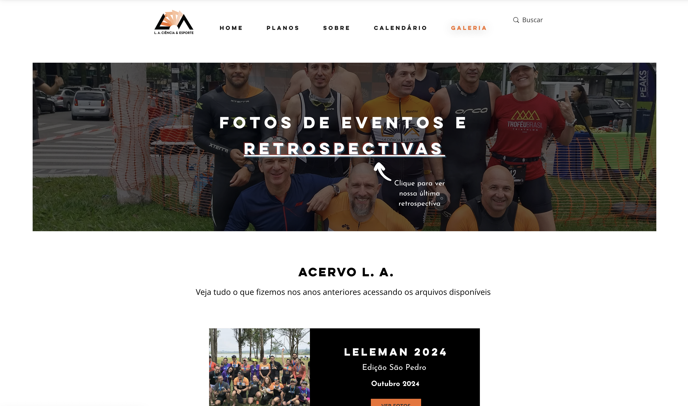
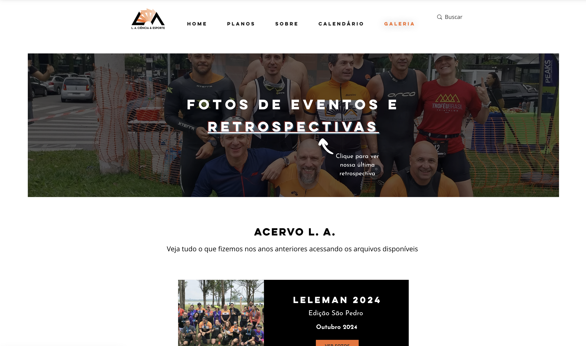

selected projects


START BY WGSN
START is a platform created for fashion entrepreneurs who need practical, easy-to-understand,
accurate, and reliable guidance. On the platform, users can find valuable fashion content curated
by WGSN, globally leading company in fashion trend consulting.
This project consisted of redesigning the entire website interface. The focus was on enhancing
usability, aesthetics, and functionality to improve user experience and increase conversion rates.
L.A. CIÊNCIA & ESPORTE
The triathlon coaching company L.A. Ciência & Esporte was born from the desire to create a
training program that fits the reality of amateur athletes. With a philosophy of enjoying
and being passionate about the process instead of the goal, the group attracts and transforms
the life and routine of people that never thought this kind of challenge to be possible.
Here we had a branding project made before the conception of the website, which consisted of
a new logo and detailed comunication strategy.
The website was designed and developed from scratch, using Saas for the execution and hosting.

 
